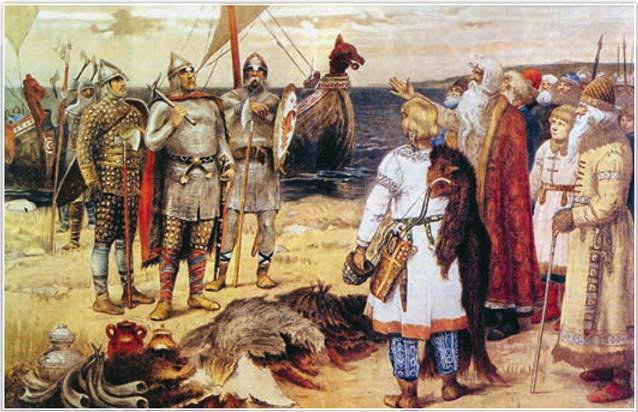
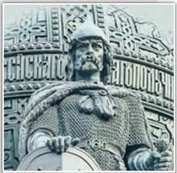
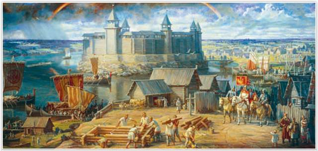
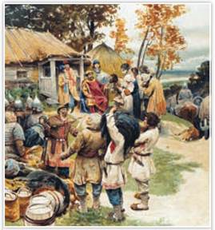
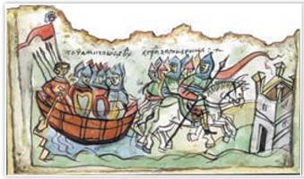

Призвание варягов. Художник В. Васнецов. 1909 г. Музей В. Васнецова. Москва
Это произведение художник написал для школьного пособия «Картины по русской истории» (1908—1913). Репродукции из этого издания можно увидеть во многих советских и российских учебниках истории, включая этот.
РОССИЯ
МИР
1. Начало русской государственности. В VIII—IX вв. у восточных славян возникают укреплённые поселения, где устраивали вече. Славяне называли свои поселения «градами» — городами. Крупным городом на среднем Днепре у полян был Киев. В земле ильменских словен важную роль играла Ладога. Известны и другие города: Изборск, Смоленск и Полоцк у кривичей, Любеч и Чернигов у северян, Искоростень у древлян, Ростов в земле мери.
В IX—X вв. шёл процесс объединения восточных славян. В «Повести временных лет», а также в средневековых хрониках сообщается о двух политических центрах, сложившихся у восточных славян: северном (Славии) — в землях ильменских словен и кривичей и южном (Куябе) — на среднем Днепре вокруг Киева в земле полян. Ильменские словене, кривичи, племена чудь и весь, платившие дань варягам, восстали и изгнали их «за море». Но не придя к согласию, они призвали на княжение варягов во главе с Рюриком.
Приглашая правителя со стороны, люди желали с его помощью преодолеть свои разногласия. Вождю, который не участвовал в местных конфликтах, легче было мирить враждовавшие стороны. В этой роли и утвердился Рюрик. Год призвания Рюрика на княжение (862) историки считают датой образования государства Русь. Потомки Рюрика составили династию князей Рюриковичей.

Рюрик на памятнике «Тысячелетие России». Великий Новгород
СВИДЕТЕЛЬСТВО ЭПОХИ
Из «Повести временных лет». Начало XII в.
В год... 862 изгнали варягов... и не дали им дани, и начали сами собой владеть, и не было среди них правды. И встал род на род, и была у них усобица, и стали воевать друг с другом. И сказали себе: «Поищем себе князя, который бы владел нами и судил по праву». И пошли за море к варягам, к руси. Те варяги назывались русью, как другие называются шведы, а иные норманны и англы, а ещё иные готландцы. Сказали руси чудь, словене, кривичи и весь: «Земля наша велика и обильна, а наряда (то есть порядка) в ней нет. Приходите княжить и владеть нами»... И избрались трое братьев со своими родами, и взяли с собой всю русь, и пришли, и сел старший, Рюрик, в Новгороде, а другой, Синеус, — на Белоозере, а третий, Трувор, — в Изборске. И от тех варягов прозвалась Русская земля.
Почему чудь, словене, кривичи и весь отправили послов к варягам? Назовите не менее двух причин.

Древняя Ладога. Художник А. Булдаков. 2003 г.
По данным археологов, в середине VIII в. Ладогу у устья реки Волхов основали варяги, но уже в 760—770 гг. здесь поселились славяне. По одной из версий, Рюрик сначала княжил в Ладоге, потом занял укреплённое поселение ильменских словен на берегу реки Волхов, позже названное Рюриковым городищем. В двух километрах от Рюрикова городища в X в. появился Новгород. Эти земли стали истоком Руси — колыбелью нашей государственности, культуры, просвещения.
Подробнее. Ещё в XVIII в. учёные спорили о происхождении Рюрика. Позднее археологи доказали, что варяги (норманны) были скандинавами. В XX в. обсуждался уже другой вопрос: являлись ли варяги создателями государства Русь? Приверженцы так называемой норманнской теории считали важной роль варягов в создании государства восточных славян. Антинорманисты полагали, что варяги сыграли в образовании Руси второстепенную роль, были всего лишь наёмниками. Сегодня норманнская теория не является предметом научного спора историков. Современные учёные утверждают, что задолго до призвания варягов в обществе восточных славян сложились условия для создания у них государства: возникло неравенство, появились князья и княжеская дружина, действовали устные правовые обычаи. Призвание Рюрика на княжение лишь ускорило образование Руси как государства.
2. Объединение двух центров славян Олегом. Пришедшие с Рюриком варяги Аскольд и Дир отпросились у него идти в Византию. Отправившись вниз по течению Днепра, они смогли утвердиться в Киеве. «Повесть временных лет» сообщает, что в 879 г. Рюрик умер, оставив малолетнего сына Игоря. Править стал родственник Рюрика Олег (879—912). Вскоре он по речному пути двинулся на юг, взяв с собой Игоря. В 882 г. Олег прибыл к Киеву на одной ладье, в которой спрятались его воины. Назвавшись варяжским купцом, он выманил Аскольда и Дира из города: «Не князья вы и не княжеского рода, но я княжеского рода». И вынесли Игоря: «А это сын Рюрика», — молвил Олег. Приказав убить Аскольда и Дира, Олег сел княжить в Киеве. «Пусть будет Киев матерью городам русским» — так летописец передаёт слова князя.
Земля полян была многолюднее и богаче северных территорий. Киев лежал на середине пути «из варяг в греки». Здесь могли перезимовать купцы, прибывшие из Скандинавии и Западной Европы, чтобы весной отплыть к византийским берегам. Путь судам на нижнем Днепре преграждали пороги — скалы, выступавшие из воды. Ладьи у порогов волокли посуху. Для этого нужна была охрана, так как купцов на берегу подстерегали печенеги — кочевой народ, обитавший в степях Северного Причерноморья со второй половины IX в.
3. Как Олег управлял государством. Каждый год с поздней осени до весны князь с дружиной объезжал свои владения: собирал дань, вершил суд, на месте обсуждал хозяйственные дела и вопросы управления. Осенью шли на ладьях, зимой двигались на санях по льду рек. Объезд князем подвластной территории для сбора дани и решения вопросов суда и управления называется полюдьем.
Дань брали зерном, скотом, но главное — пушниной, мёдом, воском, а также невольниками. Дань позволяла князю содержать дружину. В полюдье князь выполнял роль верховного правителя, судьи и защитника от внешних угроз. В апреле, когда таял лёд на Днепре, возвращались в Киев. Военную добычу, а также излишки дани продавали в столице Византии Константинополе и на других внешних рынках. Летописцы именовали византийцев греками, а их столицу — Царьградом.

Полюдье. Художник К. Лебедев. 1903 г.
Найдите на картине князя, дружинников, подвластное население. Опишите их действия.

Поход Олега с дружиной на Византию.
Копия миниатюры из Радзивилловской летописи — памятника XV в. Позднее летопись принадлежала роду Радзивиллов, отсюда её название. Текст летописи доходит до 1206 г. Содержит свыше 600 уникальных миниатюр — рисунков, один из которых приведён слева.
4. Поход Олега на Царьград. За выгодные для Руси условия торговли с Византией ещё предстояло бороться. Это стало главной причиной похода Олега на Царьград в 907 г. Разорив северо-западные области Византии, Олег осадил Константинополь и взял с греков большую дань: на каждого воина да ещё для городов восточных славян. В знак победы Олег приказал повесить свой щит на ворота Царьграда.
В 911 г. Русь заключила с Византией письменный договор. По нему с купцов, прибывавших в Константинополь с грамотой от князя, не взимались торговые пошлины, им давали бесплатное жильё и продукты. Купцы из Руси могли торговать по полгода в Константинополе, но должны были заходить в город без оружия и в сопровождении местного чиновника. Греки обязались ремонтировать их ладьи и выдавать провизию на обратный путь.
Договор 911 г. говорил о признании Византией военной силы Руси и желании греков торговать с русскими князьями.
ПОДВЕДЁМ ИТОГИ
Призвание Рюрика на княжение считается началом государства Русь. Образование государства стало закономерным следствием развития общественно-экономических и политических отношений у восточных славян. Под властью Олега, который правил после Рюрика, оказались оба важных центра славян — северный, в районе озера Ильмень, и южный — на среднем Днепре. Столицей Руси стал Киев.
Вопросы и задания
|
Правитель, даты правления |
Внутренняя политика |
Внешняя политика |
Работаем с хронологией
Расположите в хронологической последовательности события:
Работаем с источником
Прочитайте фрагмент из «Повести временных лет» и ответьте на вопросы.
Через два же года (после 862) умерли Синеус и брат его Трувор. И принял всю власть один Рюрик, и стал раздавать мужам своим города — тому Полоцк, этому Ростов, другому Белоозеро. Варяги в этих городах — находники, а коренные жители в Новгороде — словене, в Полоцке — кривичи, в Ростове — меря, в Белоозере — весь, в Муроме — мурома, и над теми всеми властвовал Рюрик.
Работаем с понятиями
Дайте определение термина «полюдье».
ДОПОЛНИТЕЛЬНЫЕ МАТЕРИАЛЫ
«УЧИТЕЛЮ И УЧЕНИКУ».
Материалы к параграфу на портале «История.РФ».